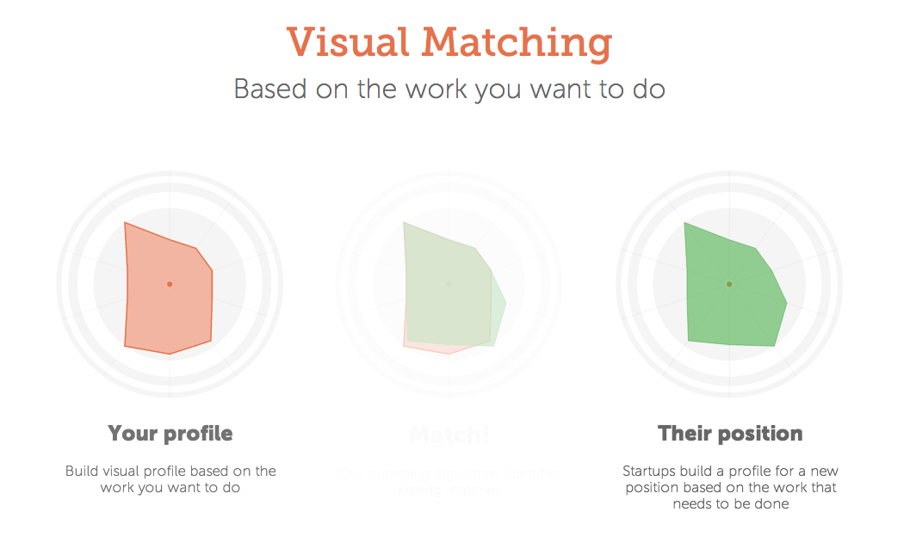

Startup recruiting // Interview with Hung Lee
I was interviewed by Hung Lee for his famous 'Startup Recruiters Exposed' podcasts.
We talked about culture, hiring technology, sourcing, Backbase, the inhouse recruiter expo here in London, guts, micro-organisms in your belly, the swissmiss blog and #DBR (the local guild of talent hackers here in London).
Hung is also founder of Workshape.io, a tool to find your new developer based on Visual Matching:

Check them out if you are looking to hire developers in London.